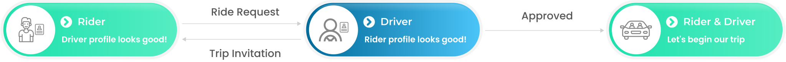

VeloMH: Ride Sharing Service
VeloMH is a trip planning and ride sharing application. You can think of it as a platform that helps you share your planned trips with others. If you plan to drive to a place, you can simply post a trip on VeloMH so that others can see it and send you ride requests if they are looking for ride to the same place. Similarly, if you do not plan to drive but have to go somewhere, you can simply post a ride request on VeloMH so that others can see it and send you trip invitations if they already planned a trip to the same place. Drivers and riders are matched by VeloMH search engine and once matched it lets both rider and driver fully review each other's profile before proceeding further. There are many unique features that distinguishes this ride sharing application from the existing ones. Below is some more information on these unique features.

Trip Planner
With VeloMH users can plan trips for the next 30 days. This is specially a suitable feature if someone needs to go to a far place in the next 30 days. This type of trip is not recurring in nature as it is mostly a one-off.
Daily Commute
For any user, it is highly inconvenient to keep creating a new trip every time if the user has to go somewhere on a regular basis. For example, you have classes at university five days a week and you need a ride almost daily. This is clearly a recurring situation and ideally you would want to automate the creation of trips based on your daily commute. The VeloMH daily commute feature does exactly that for you. Without having to manually add trips, you receive notifications on matches when it is time to go to university from home and vice versa.
VeloMH Communities

A group of people who live, work or perform any activity in the same place can be seen as a community. This concept of community associates people with physical locations (such as Office Building, University, College, Park, Gym, or Hospital)
VeloMH application maintains a list of communities. Users can request to create new communities using the app. The communities are created by VeloMH back office after validating the provided information. A community must have a name, picture, address, description, email domains (for user verification) and optionally website.
Following are some examples in Calgary for which communities can be created.
1). University of Calgary
2). South Health Campus
VeloMH users can search these communities and join them using the associated email domains. For instance, if a VeloMH user from University of Calgary wants to join that community on VeloMH, he or she can become a VeloMH verified community member by using email address with domain @ucalgary.ca. To perform verification, we send a verification code on the community email address. Community membership is granted by VeloMH app right away after successful email verification.
A VeloMH user can have multiple community memberships. For example, a part time student who is attending a school might also work somewhere at the same time. So, that person would be able to join both communities associated with that school as well as the workplace.
Benefits of communitiesWith this feature VeloMH users can use our app more confidently as they can choose the communities they trust and VeloMH system filters the matches for them accordingly. Although for old VeloMH users, reviews and ratings are going to be more important yet for new users, affiliations with well known communities could make a noticeable difference.
VeloMH: Search Engine
VeloMH search engine uses a unique algorithm. First, it looks up matches based on the origin and the destination of trips. Each entry in the matched results is then sorted or ranked so that drivers or riders marked as favourite appear on top. Next in this list appear members of either same community or favourite communities. After these entries in the search results, all the other VeloMH users appear in the descending order of their ratings.VeloMH Approval Process
If a rider sends a ride request to a driver, VeloMH application gives driver an opportunity to first review the rider's profile. If profile looks good then that driver can go ahead and approve the ride request to share further details regarding the trip. On the contrary, if a driver sends a trip invitation to a rider, VeloMH application gives rider an opportunity to first review the driver's profile. If it looks good then that rider can go ahead and approve the trip invitation to discuss further details about the trip.
User ratings, previous reviews and community memberships help determine how much a VeloMH user is likely to provide a good service. The common trip details that might be discussed after this approval process include pickup location, drop off location, time, and price. Please note that depending on the driver's preference, price could be negotiable or fixed.
If a VeloMH user provides a good service and you prefer to get services from that user in future as well then you could mark that user as your favourite. It has two benefits. The entry corresponding to favourite VeloMH users appear on top in the search results. Secondly, if both rider and driver have marked each other as favourite then approval process is skipped to help you quickly connect to your favourite VeloMH users.